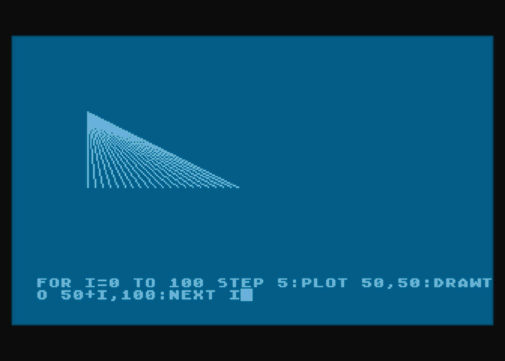

Clojure - komputerowe przygody
Clojure
Komputerowe przygody
Konrad Mrożek (
@darnok
)
O mnie
"I have a computer since 1987"
Pasjonuję się komputerami od dziecka
Od 2006 roku jestem zawodowym programistą
Głównie piszę w Java, Javascript i innych językach skryptowych
Moja droga do Clojure
Kaseta z Lispem i innymi językami
Programowanie strukturalne i obiektowe
Prawo Moore'a
Języki funkcyjne: powrót do kasety
Clojure - Lisp do JVM
Dlaczego Clojure
Funkcyjny
Rozszerzalny (przez makra)
Wydzielenie stanu
Dobra integracja z aplikacjami w JVM
REPL - interaktywne programowanie
Interaktywne programowanie

Interaktywne programowanie
Szybka odpowiedź (feed-back)
Pracujemy na działającym systemie
Wprowadzamy zmiany które są od razu wprowadzane w życie
"Komputerowe przygody"
Clojure to nieznany teren
Przypomniałem sobie o książce
Skojarzył mi się Lisp z Logo :)
Jak zacząć?
Musimy mieć zainstalowaną Javę 1.6 (najlepiej JDK)
Ściągamy ze strony Clojure (
http://clojure.org/
) plik clojure-1.x.0.jar
Uruchamiamy przez
java -jar clojure-1.x.0.jar
Pojawia się prompt REPL'a (Read Eval Print Loop)
Bardziej zaawansowany REPL uzyskujemy ściągając Leiningen (
http://leiningen.org/
)
Live coding
Narzędzie programowania
Emacs (plugin Cider -
https://github.com/clojure-emacs/cider
)
VIM (plugin vim-fireplace -
https://github.com/tpope/vim-fireplace
)
Eclipse (plugin Counterclockwise -
http://doc.ccw-ide.org/
)
Oparte na Intellij IDEa - Cursive
https://cursiveclojure.com/
(na razie dostępne jako plugin w EAP)
Live coding
Materiały
Kod gry (
https://bitbucket.org/mrroman/komputerowe-przygody
)
Clojure (
http://clojure.org/
)
Clojure Doc (
http://clojure-doc.org/
)
Grimore (
http://conj.io/
)
Brave Clojure (
http://www.braveclojure.com/
)
Dziękuję
Fork me on Github